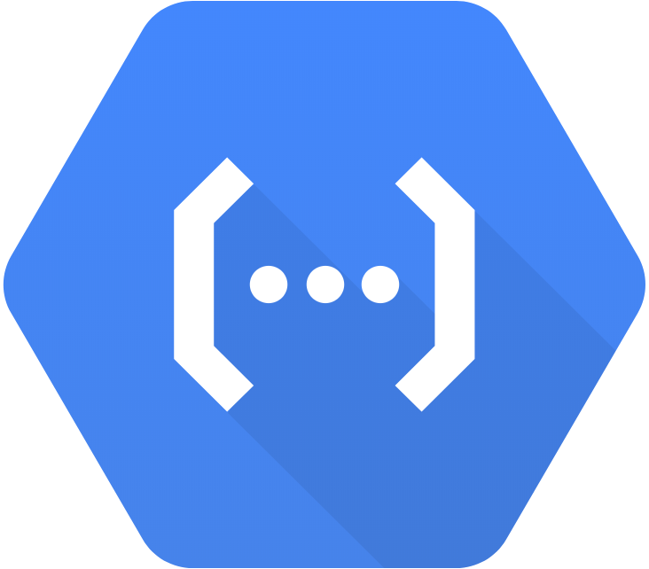
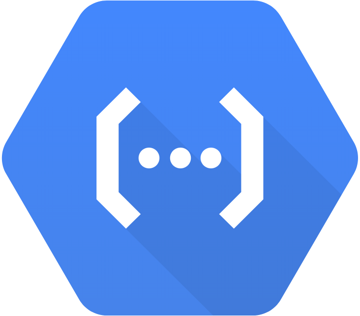
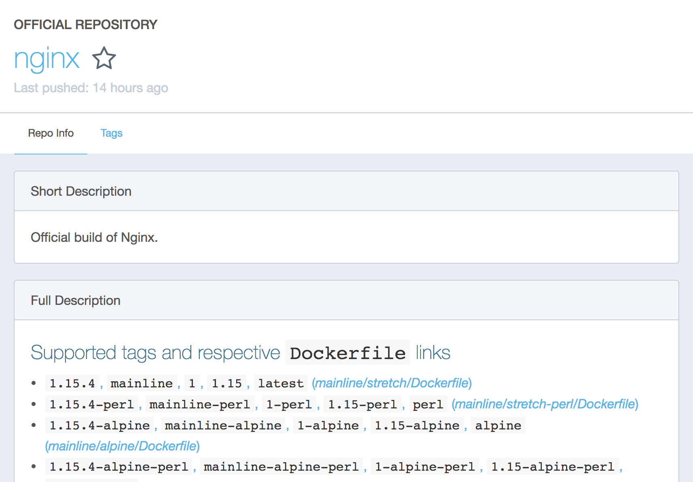
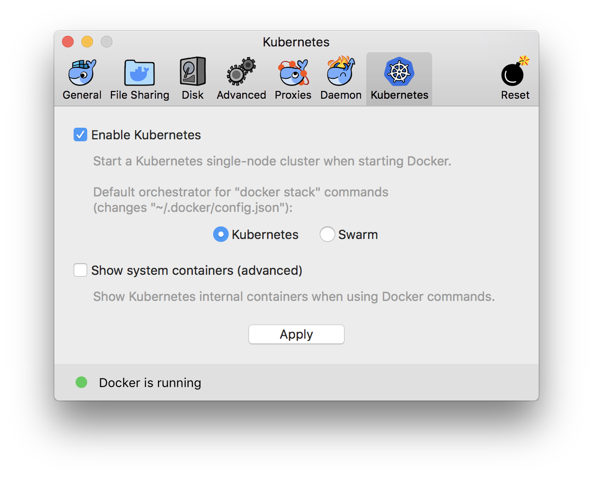

vs
vsA DevOps Bake-off:
Kubernetes vs. GCloud Functions
A bit about me...
<SoftwareEngineer
name="Sam Skjonsberg"
location="Seattle ☕️"
company="Nordstrom"
organization="Engineering Platform"
workedAt={[ "AI2", "Yabbly", "OpenCar", "Marchex", "..."]}
likes={[ "JavaScript", "Python", "Docker", "DevOps!" ]} />
Kubernetes 101:
- Automate, manage and scale container based software
- YAML + Docker = Run lots of containers on lots of nodes
- Powerful CLI and great documentation 📚
- Opensource
- Requires cluster setup and management
Kubernetes 101:

GCloud Functions in 30 Seconds:
- Vendor provided service for executing code in response to events
- "Infinite scale" and zero maintenance, all infrastructure is managed by Google
- Multiple language runtimes: node6, node8 and python 3.7
- But it's not as fully featured as AWS's toolset, the largest gap being API Gateway
Why (I think) you should care:
- We're building the ✈️ while flying it
- DevOps is the rocket booster launching us out of Earth's atmosphere 🚀
...but oftentimes we use a glider instead 🙆
...that we attach a single prop engine to 🤔
...which we eventually give auto pilot 😦
...which inevitably enounters a lot of turbulence 💥
So instead...
Let's build a rocket ship!

What we built:
- Both are simple web applications
- Non-stateful, data is queried from upstream services
- Both use
Reactandwebpackand are written inJavaScript - Each route is it's own SPA, rather than one aggregate application
Kubernetes
Cloud Load Balancer
Web Application
External Datasources
Google Cloud Functions
Web Application
External Datasources
Kubernetes:
Local Development
- Express runtime dependencies in your
Dockerfile - Use
docker-composeto locally build and run containers for fast feedback loop - Can use local kubernetes to verify production environment
import renderHome from './home';
import searchAndRenderResults from './search'
const server = express();
const port = 3000;
server
.get('/search', searchAndRenderResults)
.get('/', renderHome)
.use('/static', express.static())
.listen(port, () => console.log(`listening at http://localhost:${port}`))
"scripts": {
"build": "webpack",
"start": "node dist/server",
"start:dev": "nodemon dist/server"
}
FROM node:8.12.0-alpine
# Create a spot for source code, and install dependencies
WORKDIR /webui
COPY package.json yarn.lock ./
RUN yarn install
# Copy over our source code
COPY . .
# This allows us to set this at build time via `--build-arg`
ARG NODE_ENV
ENV NODE_ENV ${NODE_ENV:-development}
# Build n' start!
RUN yarn build
EXPOSE 3000
CMD [ "yarn", "start" ]

version: '3'
services:
server:
...
webpack:
...
server:
build:
context: .
env_file:
- ./dev/webui.env
- ./dev/secrets.webui.env
ports:
- "3000:3000"
depends_on:
- webpack
volumes:
- ./src:/webui/src
- ./dist:/webui/dist
command: [ "yarn", "start:dev" ]
webpack:
build:
context: .
environment:
- NODE_ENV=${NODE_ENV:-development}
volumes:
- ./src:/webui/src
- ./dist:/webui/dist
command: [ "/webui/node_modules/webpack-cli/bin/cli.js", "--watch" ]
~ docker-compose up --build
server_1 | [nodemon] starting `node dist/server`
server_1 | listening @ http://localhost:3000

~ docker build . -t your.registryurl.io/webui:trunk
~ kubectl config use-context docker-for-desktop
~ sed -i ".swp" \
"s/%SHA%/your.registryurl.io/webui:trunk/" \
k8s/config.yml
~ kubectl apply -f k8s/config.yml
Google Cloud Functions:
Local Development
- Our application is a single cloud function that handles multiple routes
- Each invocation is (potentially) executed in isolation in production
import renderHome from './home';
import searchAndRenderResults from './search'
const server = express();
const port = 3000;
server
.get('/search', searchAndRenderResults)
.get('/', renderHome);
if (process.env.LOCAL) {
server.use(express.static('/static'))
}
server.listen(port, () => console.log(`listening at http://localhost:${port}`))
"scripts": {
"build": "webpack --config webpack.config.cloud.js",
"start:dev": "webpack --config webpack.config.local.js"
}
yarn start:dev
Kubernetes:
Building Code
# Build the image
~ docker build . \
-t your.registryurl.io/webui:release-20180513-081033 \
--build-arg NODE_ENV=production \
# Publish it to the container registry
~ docker push your.registryurl.io/webui:release-20180513-081033
Google Cloud Functions:
Building Code
"scripts": {
"build": "webpack --config webpack.config.cloud.js",
"start:dev": "webpack --config webpack.config.local.js"
}
Your function will be bundled into a single executable.
NODE_ENV=production
# That's all folks!
yarn build
Kubernetes:
Deploying Code
apiVersion: apps/v1
kind: Deployment
metadata:
name: webui
labels:
app: webui
spec:
replicas: 3
selector:
matchLabels:
app: webui
template:
metadata:
labels:
app: webui
...
spec:
containers:
- name: webui
image: your.registryurl.io/webui:%SHA%
resources:
requests:
cpu: 1
memory: 256Mi
ports:
- containerPort: 3000
livenessProbe:
httpGet:
path: /health
port: 3000
scheme: HTTPS
initialDelaySeconds: 5
periodSeconds: 30
...
envFrom:
- configMapRef:
name: webui-env
- secretRef:
name: webui-env
kind: Service
apiVersion: v1
metadata:
name: webui
spec:
selector:
app: webui
ports:
- protocol: TCP
port: 443
targetPort: 3000
type: LoadBalancer
# Connect to the Kubernetes Cluster
gcloud container clusters get-credentials cluster-1 --region=us-west1
# Set the namespace for every kubectl command that follows
kubectl config set-context (kubectl config current-context) --namespace=webui
# Set the version of our container that we want to deploy
sed -i "s/%SHA%/$DOCKER_IMAGE_SHA/" k8s/config.yml
# Deploy! Kubernetes figures out what to do
kubectl apply -f config.yml
# Block until it's done, and print out the status as things occur
kubectl rollout status -w deployments webui
Google Cloud Functions:
Deploying Code
First, ship your assets to object storage so you can let Google do the heavy lifting 💪:
# Ship our assets up to the cloud
gsutil cp -r "./dist/static" gs://webui-assets/
# Give everyone access to it
gsutil acl ch -ur AllUsers:R gs://webui-assets/
Then deploy the code:
cd dist/webui
gcloud functions deploy webui \
--runtime nodejs8 \
--trigger-http \
--set-env-var NODE_ENV=production
- At this point, your cloud function will be available at a URL like:
https://us-central1-sandbox-kbqg.cloudfunctions.net/webui - Yes, that's not a very friendly URL
- Unfortunately Google doesn't have an analog for AWS API Gateway (yet) that makes this easy to resolve.
- To resolve this you could use a reverse proxy that's hosted somewhere else
- ...but don't do that, as that defeats the point
- Another option is "Cloud Functions for Firebase", which is something we're looking into
- But for now it rules out Cloud Functions for UIs that require a vanity URL
Kubernetes:
Observability and Debugging
Who doesn't love logs?
- Standard out can easily be sent to Google's Stackdriver service, and viewed with the
kubectl logcommand line API.
# Read all logs on k8s for a given pod
kubectl logs pod/webui
# Pipe them to your favorite shell utility and work wizardry ✨
kubectl logs pod/webui | grep 'Error'
# Follow them!
kubectl -f logs pod/webui`
Debugging deployed environments:
- If something fishy 🐟 is happening, we can debug via a shell running in a specific pod:
kubectl exec -it pod/webui -- /bin/sh
> env | grep 'SUPER_SECRET_API_KEY'
SUPER_SECRET_API_KEY=ŚÙP3R_ŠËCR3TS
Google Cloud Functions:
Observability and Debugging
Logs, logs and more logs:
- Logs are automatically aggregated using Stackdriver, and can be viewed via a command line API as well:
gcloud functions logs read
gcloud functions logs read FUNCTION_NAME
gcloud functions logs read FUNCTION_NAME --execution-id EXECUTION_ID
So, who wins?
¯\_(ツ)_/¯
(It depends)
The "Kase" for Kubernetes
- More powerful for operators
- Lots of flexibility (cronjobs, web services, etc), though this may be a double edge sword ⚔️...
- It's open source and cloud agnostic (kind of)
- Powerful deployment capabilities
- Full control of execution environment allows fine grained control of latency
knativeis coming...- BUT...it takes a lot of ramp up, and requires cluster setup and maintenance
Favoring Functions
- Less is more, but you're bound to your vendor
- Could save your organization money with certain types of services
- Fully abstracted and infinitely scalable
- There are gaps in Google Cloud's offering, but Google is catching up fast...
- BUT...there are use-cases which don't make sense (like a UI)
Use Kubernetes for:
- Customer facing UIs
- Internal tools that need to be accessible at friendly URLS
- Memory or time intensive applications
- Cronjobs and batch processes
Use Google Cloud Functions for:
- Event based architectures (https://github.com/Nordstrom/serverless-artillery)
- Back-end services that don't have aggressive latency targets
- Bulk message processing, index population
- Non customer facing UIs / administrative UIs intended for low usage